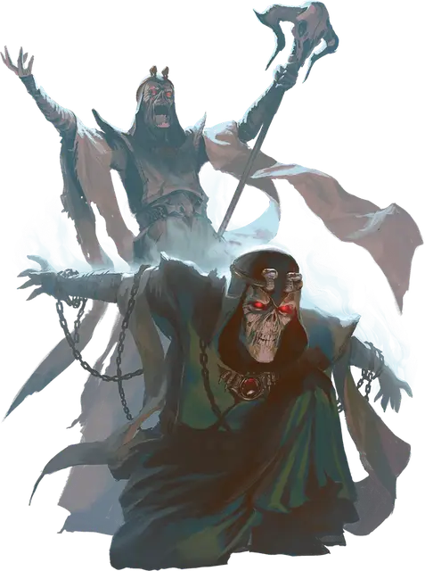

Ложный лич
False Lich
Средняя Нежить, обычно нейтрально-злая

Класс Доспеха 18 (природный доспех)
Хиты 199 (21к8 + 105)
Скорость 30 футов
| мод | спас | ||
|---|---|---|---|
| СИЛ | 10 | +0 | +0 |
| ЛОВ | 16 | +3 | +3 |
| ТЕЛ | 20 | +5 | +12 |
| мод | спас | ||
|---|---|---|---|
| ИНТ | 25 | +7 | +14 |
| МДР | 19 | +4 | +11 |
| ХАР | 15 | +2 | +9 |
Иммунитет к урону некротическая энергия, психическая энергия, яд; немагический дробящий, колющий, рубящий
Иммунитет к состояниям испуг, истощение, отравление, очарование, ошеломление, паралич
Чувства истинное зрение 60 футов, пассивное Восприятие 14
Языки Общий, Бездны, Великаний, Дварфийский, Драконий, Инфернальный, Первичный, Подземный, Эльфийский
Опасность 21 (33000 опыта)
Бонус мастерства +7
Особенности
Легендарное сопротивление (3/день). Если ложный лич проваливает спасбросок, он может вместо этого сделать спасбросок успешным.
Сопротивление магии. Ложный лич совершает с преимуществом спасброски от заклинаний и прочих магических эффектов.
Действия
Мультиатака. Ложный лич совершает две атаки Смертельным разрывом и использует Кровавый плач, если возможно.
Смертельный разрыв. Рукопашная атака заклинанием: +14 к попаданию, досягаемость 5 футов, одно существо. Попадание: 23 (3к10+7) урона некротической энергией.
Кровавый плач (перезарядка 5-6). Ложный лич издает жуткий вопль, наполненный негативной энергией. Все существа в пределах 30 футов от ложного лича должны преуспеть в спасброске Мудрости Сл 22, иначе становятся испуганными на 1 минуту. Пока существо напугано подобным образом, оно также находится без сознания. Испуганное существо может повторять спасбросок в конце каждого своего хода, при успехе оканчивая на себе эффект.
Использование заклинаний. Ложный лич накладывает одно из следующих заклинаний, используя Интеллект в качестве базовой характеристики и без использования материальных компонентов (Сл спасброска от заклинаний 22):
• Неограниченно: обнаружение магии [detect magic], полёт [fly], волшебная рука [mage hand], фокусы [prestidigitation]
• 3/день каждое: рассеивание магии [dispel magic], невидимость [invisibility] (только на себя)
• 1/день каждое: сфера неуязвимости [globe of invulnerability], удержание чудовища [hold monster]
Бонусные действия
Поглощение души. Ложный лич выбирает целью видимое им существо в пределах 120 футов от него. Цель должна совершить спасбросок Харизмы Сл 22, совершая бросок с помехой, если она без сознания. При провале цель получает 21 (6к6) урона силовым полем и половину этого урона при успехе. Затем ложный лич восстанавливает равное нанесенному урону количество хитов.
Если этот урон уменьшает хиты цели до 0, то она мгновенно умирает, её тело исчезает, а душа оказывается заперта в одном из камней душ на черепе ложного лича. По истечению 24 часов камень передает душу создателю ложного лича.
Когда хиты ложного лича опускаются до 0, он уничтожается и рассеивается, оставляя после себя лишь камни душ. Разрушение камня высвобождает все запертые в нем души, после чего соответственные им тела вновь появляются в незанятых местах, расположенных как можно ближе к камню, в том же состоянии, в котором они были на момент заточения душ.
Легендарные действия
Лич может совершить 3 легендарных действия, выбирая из представленных ниже вариантов. За один раз можно использовать только одно легендарное действие, и только в конце хода другого существа. Лич восстанавливает использованные легендарные действия в начале своего хода.
Злобная телепортация. Ложный лич телепортируется вместе со всем несомым и носимым снаряжением, на расстояние до 60 футов в свободное пространство, которое он видит. Затем он совершает атаку Смертельным разрывом, если это возможно.
Накладывание заклинания (стоит 2 действия). Ложный лич использует особенность Использование заклинаний.
Описание
Иногда личи создают гнусные магические копии самих себя, чтобы обманывать врагов, охранять сокровища или по другим непостижимым причинам.
Чтобы создать ложного двойника, лич связывает частицу своей жизненной силы с трупом в ходе оскверняющего ритуала. Это превращает труп в почти идентичную копию лича с огромной некротической силой и некоторыми мистическими способностями оригинала. Затем создатель вставляет в глазницы трупа зачарованные драгоценные камни, которые позволяют ложному личу улавливать души существ и передавать их своему создателю.
Ложные личи часто со временем обретают чувство самосознания. Многие из них остаются непоколебимо верны своим создателям, другие же обижаются на них за то, что те заперли и бросили их.